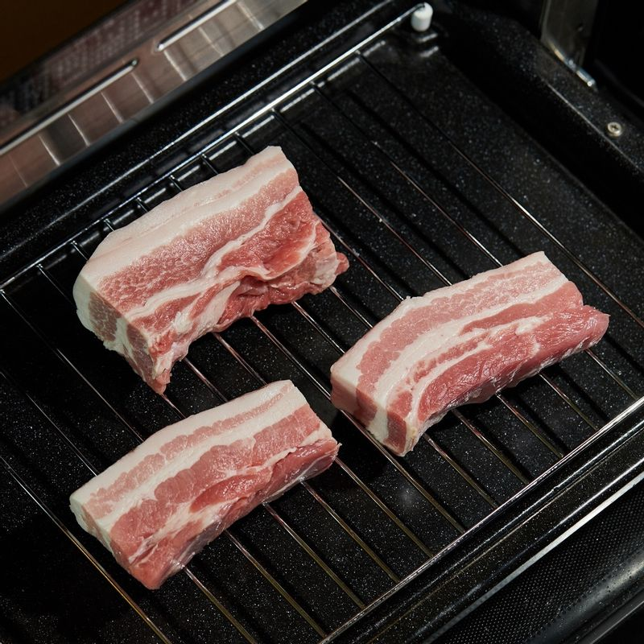
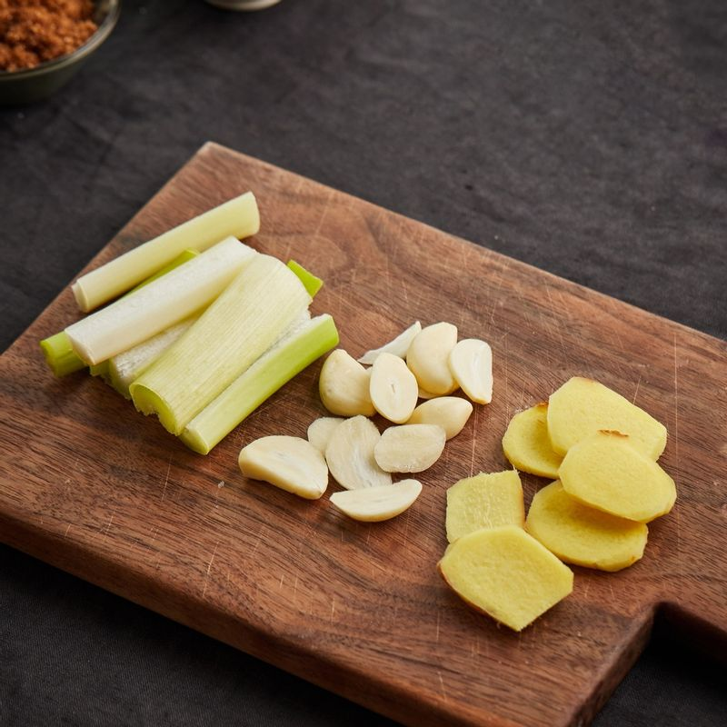
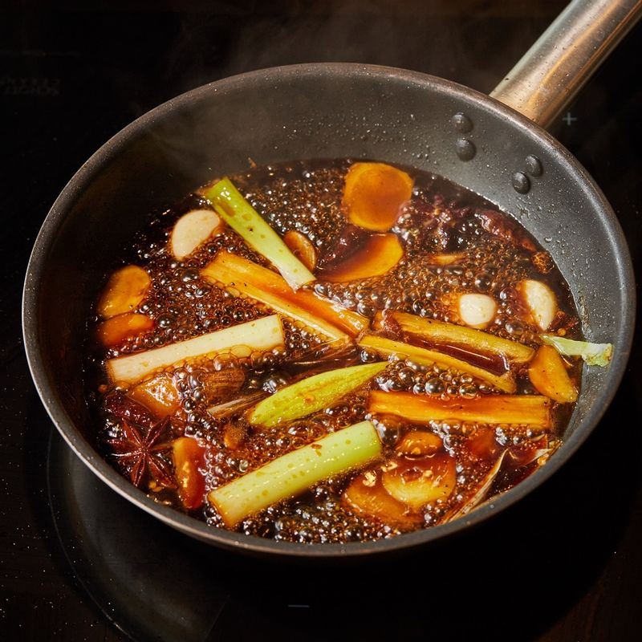
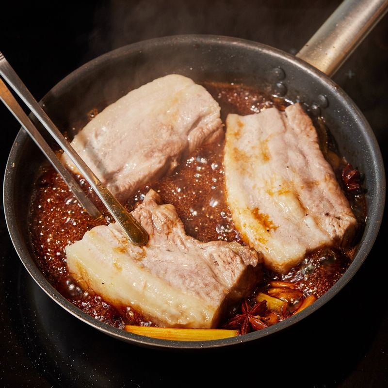
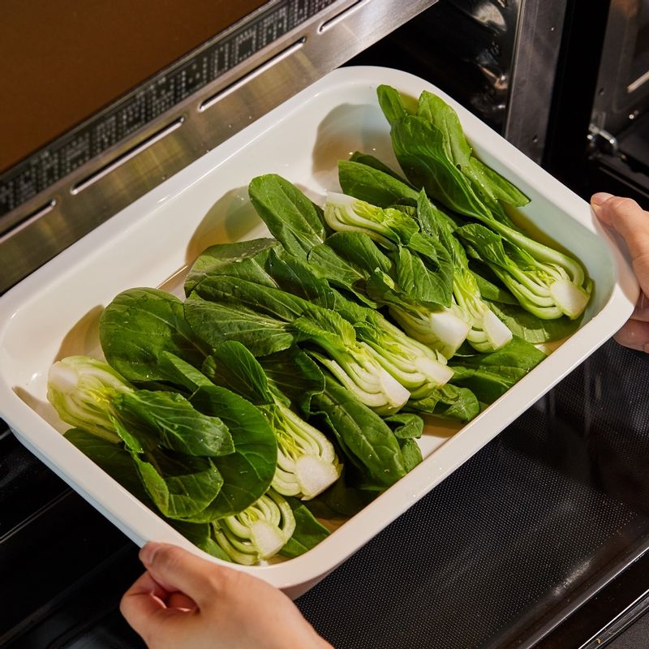

-

법랑 접시에 석쇠를 놓고 삼겹살을 올린 후 1단에 넣어주세요. 광파오븐 자동 요리 <스팀>에서 <삼겹살> 0.6kg 분량을 선택한 후 가열해 주세요.
-

마늘과 생강은 편 썰고, 대파는 손가락 길이로 썰어주세요. 페퍼론치노는 잘게 부숴주세요.
-

달군 팬에 식용유를 두르고 편으로 썬 마늘과 생강, 대파, 건고추, 팔각을 넣고 볶다가 조림 소스를 넣어주세요.
-

소스가 끓어오르면 익힌 삼겹살을 넣고 뒤집어가며 5분간 졸인 후 먹기 좋게 썰어주세요.
-

청경채는 깨끗이 씻어 4등분한 후 내열 용기에 담아주세요.
-
그릇에 청경채와 동파육을 담아 맛있게 즐겨주세요.